1
分享入口与打开小程序入口统一上移到头图位置
H5 端分享悬浮按钮、小程序端打开小程序悬浮按钮，都调整到头图区域展示，避免与页面中部功能入口混放。
本页不再沿用 Axure 导出的散点式标注，而是把同一页面里的截图位、功能点、规则说明合并成完整模块。 每个模块都按“页面元素 -> 功能编号 -> 描述规则 -> 原始摘录”的方式表达，方便产品、研发、测试共同阅读。
当前页面已经切换为“原始截图 + 对应功能描述”的整理方式。左侧使用原 Axure 导出页面直接裁出的真实截图，右侧按页面视觉顺序拆解功能点， 下方保留原始需求摘录，方便产品、研发、测试三方直接对照同一份页面理解需求。
聚焦产品详情页首屏区域，明确分享入口位置调整、线路PK入口展示条件，以及按钮动效与滚动交互规则。
原稿图 1：活动详情页头图右上分享入口 / 打开小程序入口。
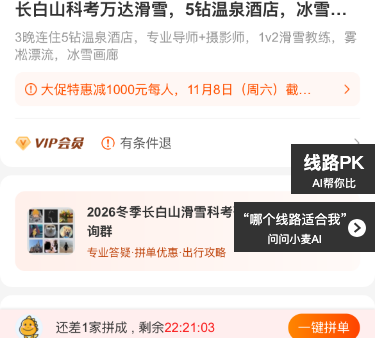
原稿图 2：页面中部线路PK入口，覆盖入口展示和动效收起场景。
图中对应顺序：1 为头图右上分享 / 打开小程序入口；2 为页面中部线路PK入口；3 为入口动效与页面下滑后的收起规则。
H5 端分享悬浮按钮、小程序端打开小程序悬浮按钮，都调整到头图区域展示，避免与页面中部功能入口混放。
1、H5/小程序端分享悬浮按钮/打开小程序悬浮按钮位置调整到头图位置。
2、如果产品品类为亲子游、营地教育-多日营且非隐藏可售，详情页增加“线路PK”悬浮按钮，点击进入线路PK页面。
3、按钮动效及交互说明：当日没有发起过对比，页面刷新动效执行一次；页面下滑收起且中断动效。已发起过对比则不再执行动效。
把活动选择页拆成可直接评审的模块：顶部结构、Tab 顺序、品类标签、产品卡片、选择校验和底部对比栏。
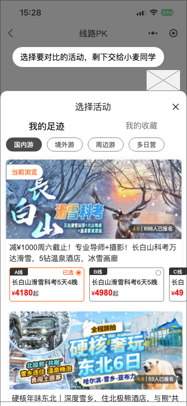
图中对应顺序：从上到下依次对应弹窗标题与关闭区、足迹/收藏 Tab、品类标签、产品卡片内容、底部对比栏。
从产品详情进入线路PK后，不先展示结果页，先进入活动选择弹窗，用户必须完成活动选择后才能继续。
进入 PK 页后，先弹窗选择活动；区分我的足迹 / 我的收藏两个 Tab；按品类展示分类标签，并将当前浏览品类置顶。
列表展示可见可售产品，支持默认线路/套餐带入；产品卡片需要展示头图、评分、标题、线路、套餐和选择状态。
只支持两个活动、只支持同类活动对比；底部展示选中产品与对比按钮。
明确分类下无产品时的空态反馈方式，以及“去挑选”按钮的跳转目标，避免空白页面没有下一步动作。
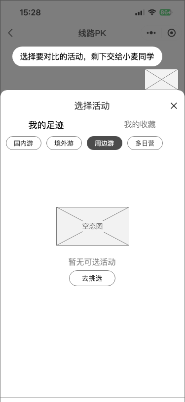
图中对应顺序：先看空态提示，再看底部跳转按钮，按钮点击后按当前品类跳转到对应频道页。
当用户切换到某个品类标签后，如果该分类下没有可见可售产品，则页面展示统一空态，不展示空白列表。
如果对应分类下无产品，给空态；点击去挑选按钮，跳转到对应金刚区品类页。
把“思考过程”和“结果输出”拆开表达，说明四步进度、流式输出时机、按钮显示时机和页面底部交互状态。
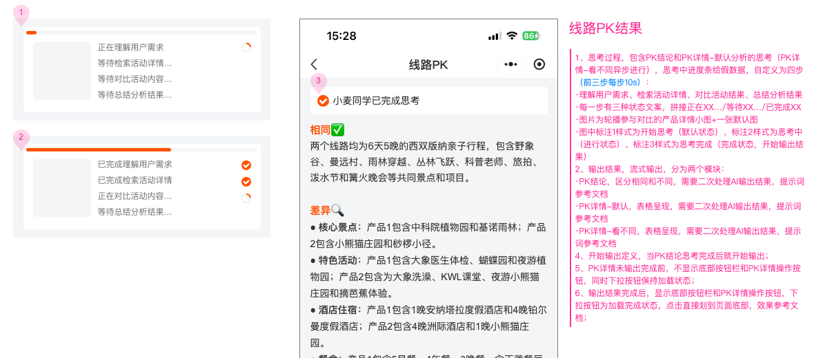
图中对应顺序：页面先展示思考提示区，再展示 PK 结论和 PK 详情；底部按钮区是否出现取决于结果是否已经输出完成。
思考过程包含 PK 结论和 PK详情-默认分析的思考；四步文案固定；每一步有等待 / 正在 / 已完成三种状态。
输出结果分为 PK结论、PK详情-默认、PK详情-看不同；PK结论思考完成后开始输出；结果未完成前不显示底部按钮。
把默认对比表格拆成“本地字段”“AI 结果字段”“行程展示规则”三组，让研发和测试都能快速定位字段来源与呈现方式。
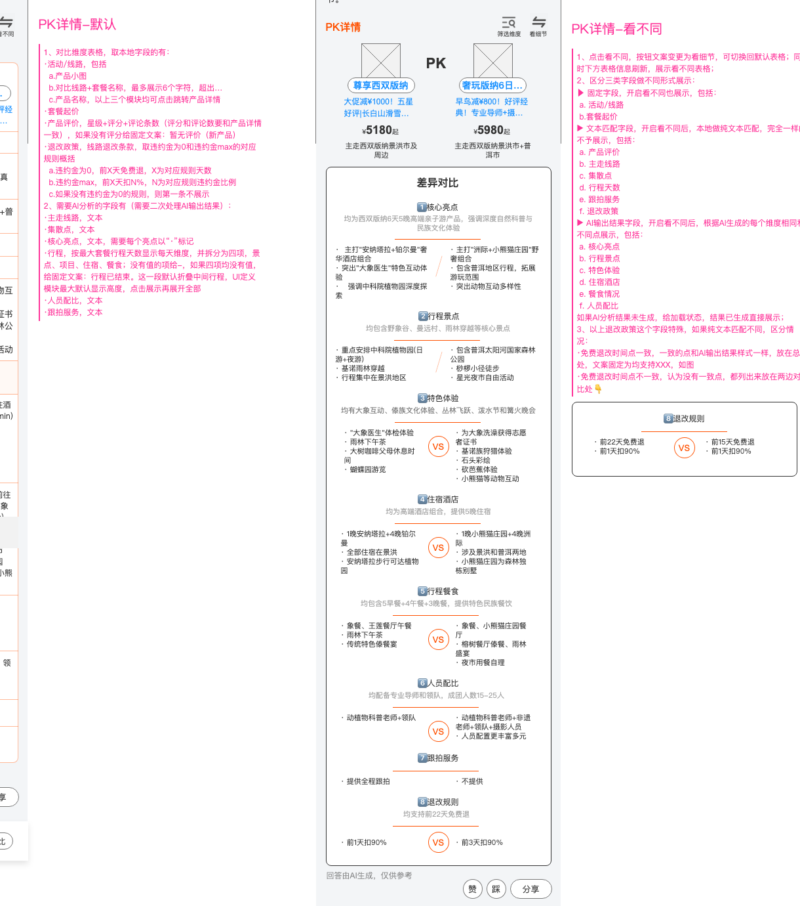
图中对应顺序：默认表格从上到下依次关注活动/线路、套餐起价、评价与退改政策，再往下看 AI 字段和行程模块。
本地字段包括活动/线路、套餐起价、产品评价、退改政策；AI 字段包括主走线路、集散点、核心亮点、行程、人员配比、跟拍服务。
行程按最大套餐行程天数展示，并拆分景点、项目、住宿、餐食四项；无值展示“-”，四项无值展示“行程已结束”。
合并“看不同”和“筛选维度”两个强关联功能，统一说明按钮切换、字段分组规则、维度筛选行为以及更多维度弹窗。
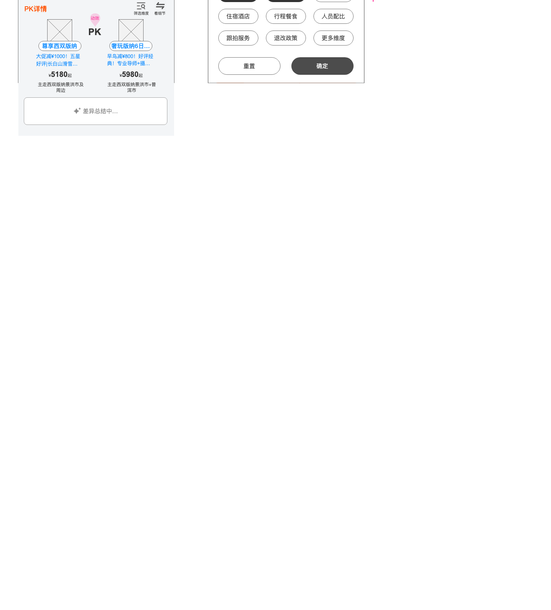
图中对应顺序：先看顶部“看不同 / 看细节”和“筛选维度”按钮，再看筛选维度弹窗中的维度标签、重置、更多维度和确定按钮。
看不同模式下，字段分固定字段、文本匹配字段、AI 输出字段三类；完全一致的文本字段不展示。
筛选维度默认选中“全部”；固定维度不参与筛选；点击确定后对默认表格和看不同表格同时生效。
整合点赞、点踩、分享、更多维度、咨询客服、重新对比等底部操作，并补充反馈弹窗和选择咨询活动弹窗规则。
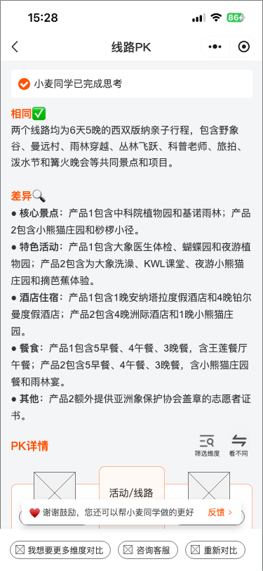
原稿图 1：点赞反馈提醒 / 使用反馈入口页。
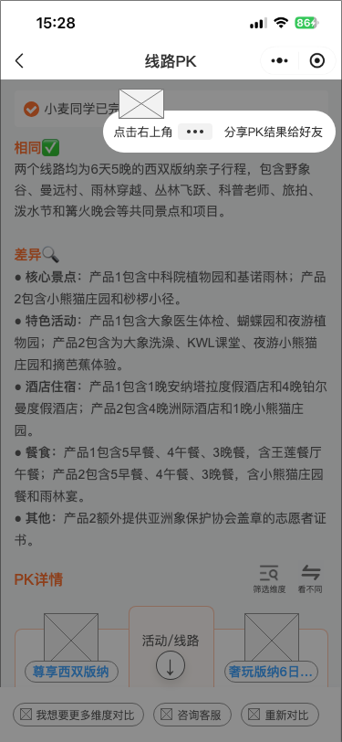
原稿图 2：分享蒙层提示。
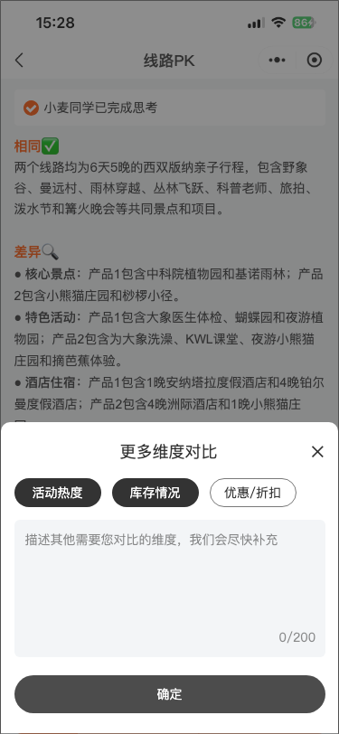
原稿图 3：更多维度对比弹窗。
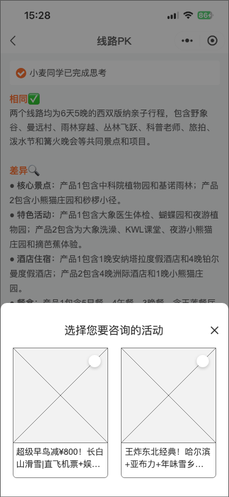
原稿图 4：选择咨询活动弹窗。
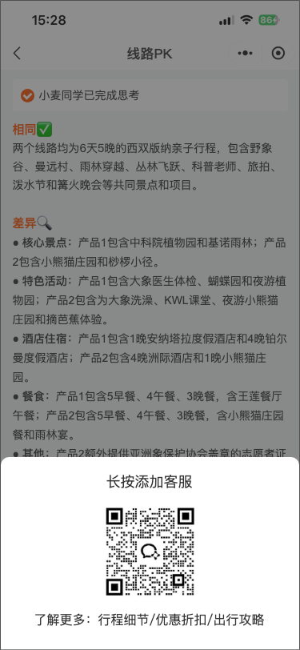
原稿图 5：客服二维码 / 企微获客弹窗。
图组对应顺序：原稿图 1 为点赞反馈提醒 / 使用反馈入口页，原稿图 2 为分享蒙层，原稿图 3 为更多维度对比弹窗，原稿图 4 为选择咨询活动，原稿图 5 为客服二维码 / 企微获客弹窗。
点赞、点踩、分享、更多维度、咨询客服、重新对比都位于结果页底部功能区；点踩反馈与更多维度弹窗都要求支持多选与 200 字自定义输入。